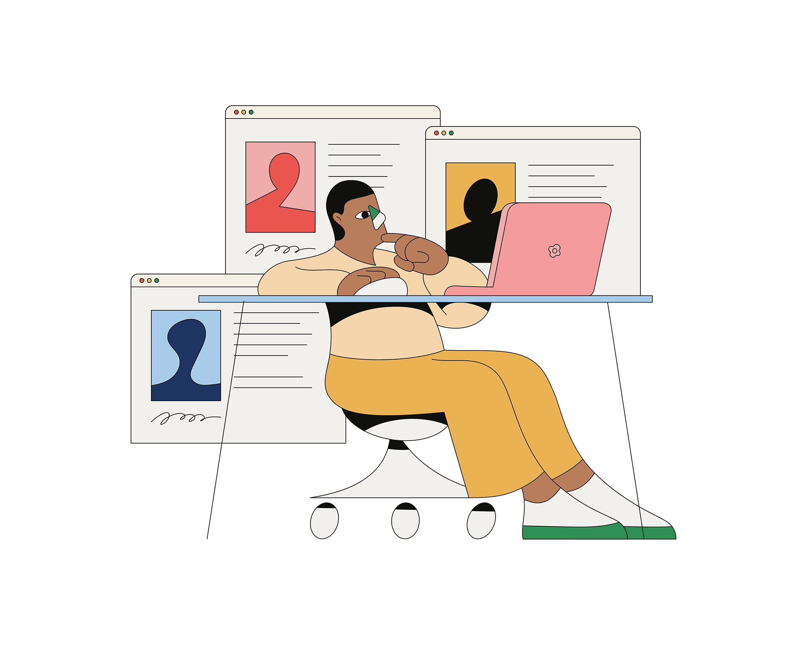

Camilo Huinca's work is rich with colour, content and a brightly illustrated narrative that speaks for itself. Camilo has divided his career between graphic design and painting. Working independently has allowed Camilo to “develop (his) own style, having a main focus on the use of curiosity,” he explains.


He described his main motivation as, “to be able to generate a communication method based on simplicity and synthesis, with few tools and colours.” I am interested in identifying people’s behaviour, portraying activities, intimate moments, body gestures, disfiguring objects and reducing the amount of detail in a composition.”